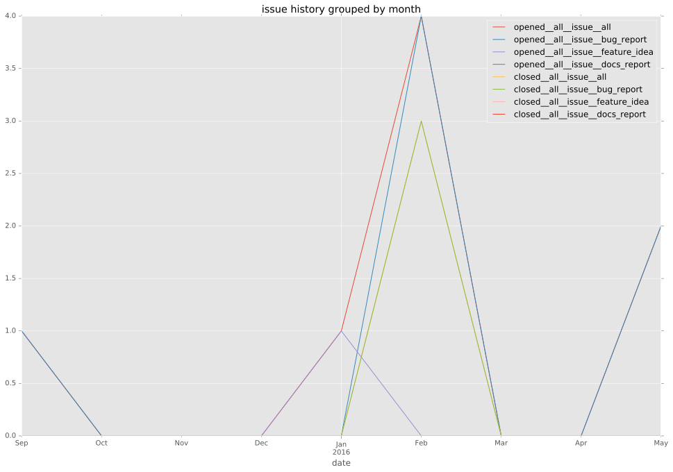
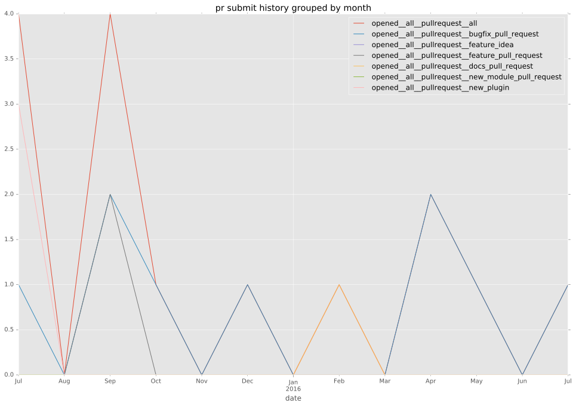
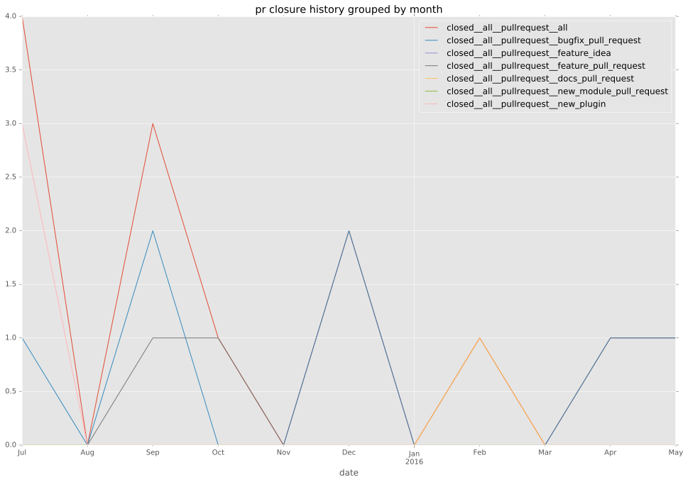

total issue counts
feature pull request: 1
pullrequest: 8
docs pull request: 1
bugfix pull request: 5
feature idea: 2
issue: 9
new plugin: 1
bug report: 7
issue history

pullrequest history


days open by issue type
bugfix pull request
count: 4
std: 1.5
min: 0
max: 3
median: 2.0
mean: 1.75
all
count: 14
std: 31.3656212724
min: 0
max: 120
median: 2.0
mean: 11.5714285714
pullrequest
count: 0
std: nan
min: nan
max: nan
median: nan
mean: nan
docs pull request
count: 2
std: 0.0
min: 1
max: 1
median: 1.0
mean: 1.0
feature pull request
count: 2
std: 0.0
min: 8
max: 8
median: 8.0
mean: 8.0
feature idea
count: 0
std: nan
min: nan
max: nan
median: nan
mean: nan
issue
count: 0
std: nan
min: nan
max: nan
median: nan
mean: nan
new plugin
count: 2
std: 0.0
min: 1
max: 1
median: 1.0
mean: 1.0
bug report
count: 4
std: 57.6100396343
min: 0
max: 120
median: 7.5
mean: 33.75
closures grouped by total days open